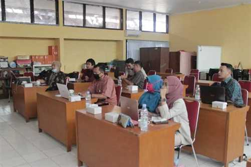
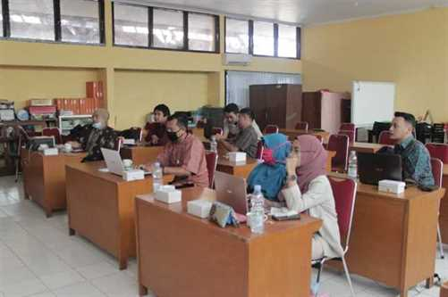

Rekayasa Perangkat Lunak adalah satu bidang profesi yang mendalami cara-cara pengembangan perangkat lunak termasuk pembuatan, pemeliharaan, manajemen organisasi, dan manajemen kualitas.
KOMPETENSI DASAR
- Pemrograman Dasar
- Jaringan Komputer Dasar
- Sistem Komputer
- Kerja Proyek
- Administrasi Database
- Pemrograman Web dan Perangkat Bergerak
- Pemodelan Peragkat Lunak
- Java Mobile
- Android Studio
KURIKULUM SINKRONSASI
Kompetensi Keahlian Rekayasa Perangkat Lunak, telah melaksanakan sinkronisasi kurikulum dengan:
1.Pt. Jerbee Indonesia
2.File Dokumentasi Sinkronisasi Kurikulum :
SINKRONISASI-KURIKULUM-TEACHING-FACTORY-TKI-RPL-FIX
PROGRAM UNGGULAN/UNIT PRODUKSI/TEACHING FACTORY
1.Program Unggulan
STANDING INFORMATION BOARD, Stading board information merupakan sebuah bentuk penyampaian suatu iStading information board merupakan sebuah bentuk penyampaian suatu informassi melalui media display elektronik yang dilakukan secara statis. umumnya memanfaatkan LCD, LED dan juga Plasma. STANDING INFORMATION BOARD ini mampu dimanfaatkan untuk menyampaikan informasi secara satu arah. penggunaan STANDING INFORMATION BOARD ini telah digunakan diberbagai layanan publik seperti Mall, Rumah Sakit, billboard, dan yang lainya.

2.Unit Produksi dan Teaching Factory
Unit produksi merupakan salah satu bentuk sumber belajar di lingkungan sekolah yang sengaja disiapkan sebagai tempat praktik kewirausahaan. Penerapan unit produksi sendiri memiliki landasan hukum yaitu Peraturan Pemerintah Nomor 29 Tahun 1990 pasal 29 ayat 2 yaitu “Untuk mempersiapkan siswa sekolah menengah kejuruan menjadi tenaga kerja, pada sekolah menengah kejuruan dapat didirikan unit produksi yang beroperasi secara profesional.”

PENINGKATAN KOMPETENSI GURU
1.kegiatan magang di PT. Surya Tekno Mandiri (ESTIMA) – Solo


2.Kegiatan Workshop dengan PT. Jerbee Indonesia
 


KEGIATAN PEMBELAJARAN
Untuk menunjang kemajuan teknologi pada jurusan Rekayasa Perangkat Lunak menerapkan beberapa motde dalam pembelejaran. salah satu metode yang diterapkan adalah Game Base Learning (GBL). Metode pembelajran GBL adalah metode yang menggunakan aplikasi permainan/Game yang telah dirancang khusus untuk membantu dalam proses pembelajaran. Dengan menggunakan game-based learning dapat memberikan stimulus pada tiga bagian penting dalam pembelajaran yaitu emosional, intelektual dan psikomotor


KEGIATAN UNIT PRODUKSI NESAS.TECH


INSTITUSI PASANGAN